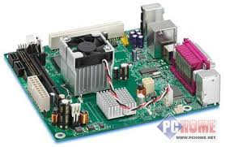
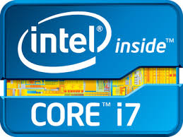
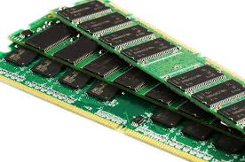
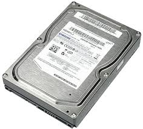
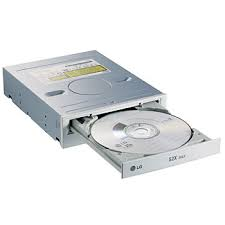
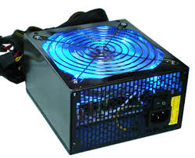
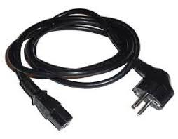
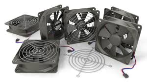
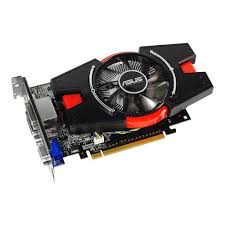
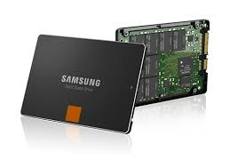

MOTHERBOARD- The motherboard is a printed circuit board that houses most, if not all of the internal components. These include the Central Processor and the Memory cards as well as sound cards, graphics cards, video cards, any ports such as USB 2.0 or Firewire and the DVI port which handles the Monitor.
PROCESSOR- The processor is a computer chip that carries out instructions given by computer programs and handles all the day to day tasks that a PC has to do. They used to use up an entire circuit board, but nowadays, microprocessors like this one handle everything from just one chip.
RAM- RAM is a type of temporary computer data storage. It deals with temporary data requests such as keeping windows open on a desktop or just viewing a file. RAM can often be overloaded which is what happens if a window freezes during shutdown or stops working.The more RAM you have (8GB is the biggest), more windows and processes can be open than if you only have little Ram (e.g. 1GB).
HARD DISK DRIVE- The Hard Disk drive is a type of permanent computer data storage. Data is retrieved by using a series of rapidly spinning magnetic disks that store the data. The spindle physically writes the data to the magnetic disk and is a very delicate piece of hardware that must be handled carefully.Unlike RAM, hard drives retain data even if the machine is powered off or cut off unexpectedly because of a power cut. Data can be lost if the hard drive breaks or becomes corrupt.
CD-ROM DRIVE- A CD Rom drive is a drive that reads compact discs only, but now expands to DVDs as well. These use laser beams to read the data on the disc. Drives like this one connect to the motherboard via SATA cables usually on internal drives, external drives connect via USB.The laser inside can move around to scan the CD from any angle. Constant reading by laser can cause scratches to the disc and the laser won’t read it properly as the scratches affect this process.
POWER SUPPLY- The Power Supply unit is a switch operated unit that converts mains AC electricity into DC electricity that powers all the internal components. These units have many cooling systems to them so that they do not overheat. Also, a fan on the front makes sure that power constantly flows to the PSU and cools the system so it does not break down.
POWER CABLE- These cables are connected to the Power Supply Unit and cables that look like this power the motherboard and is the largest connector found on a PCs motherboard. Without these, the computer would not work, so are an essential internal component.
FAN- A fan inside a computer is a fan that sucks cool air into the PC case and blows hot air out of the case and stops any key components overheating. This is an essential part of a computer’s cooling system. Fans can stop working if they become clogged by dust or any foreign bodies, so require regular cleaning.
GRAPHICS CARD- The graphics card is a type of expansion card that processes and produces outputs for displays. These are a crucial component that monitors rely on. They also handle output of video (such as S-Video) to projectors. They also have their own fans as this type of card gets hot quickly and needs instant cooling.
SOLID STATE DRIVE (SSD)- Solid State Drives are drives that have no actual mechanical parts and are a form of computer data storage. There construction resembles that of a giant memory card found in digital cameras. These drives boot up faster than traditional hard disks, but they have less storage than their magnetic disks counterparts. They are also less susceptible to shock than regular hard disks, reducing damage to the drive itself.